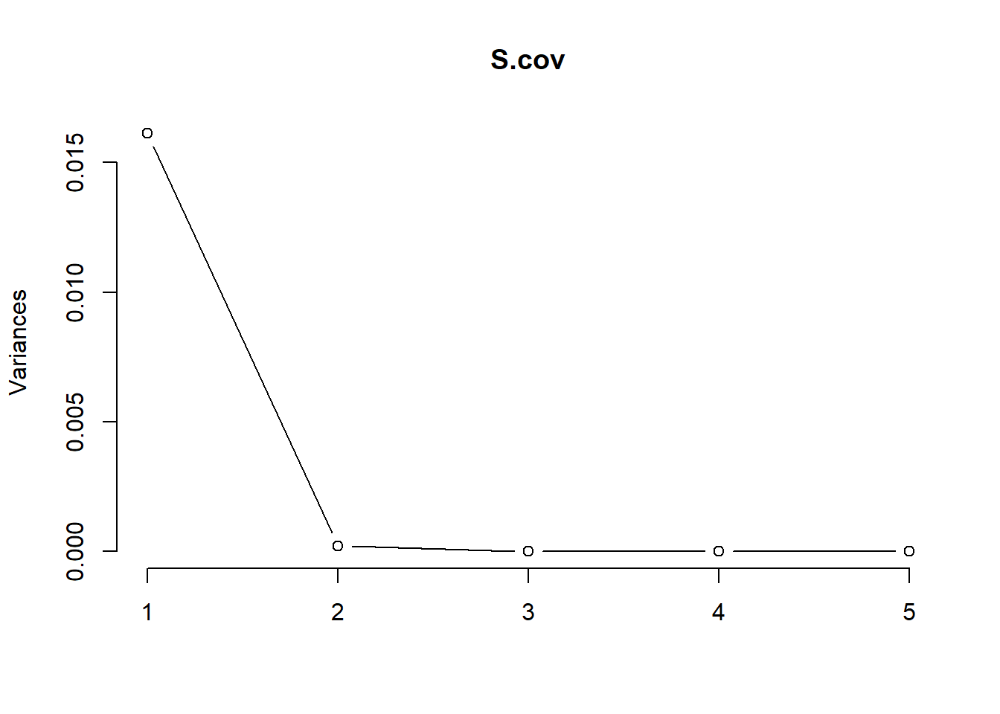
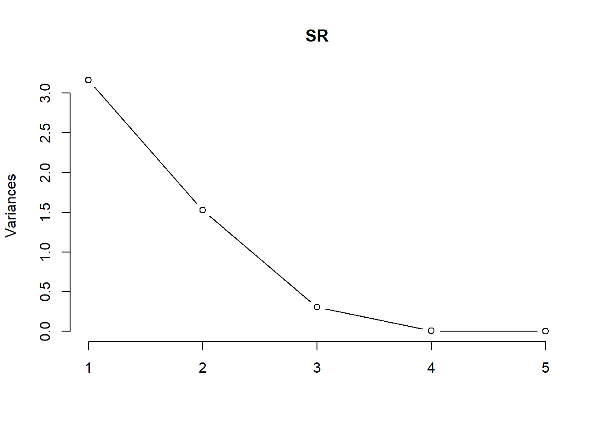
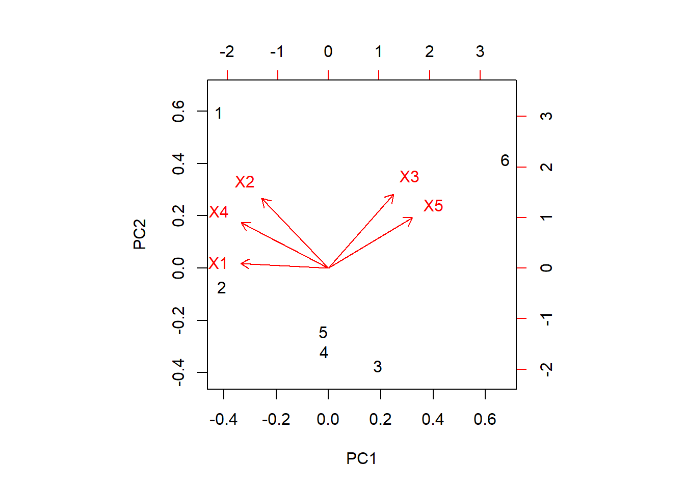

9 Multivariada
Entrada dos dados
Dados entre parênteses são os valores observados das respectivas variáveis, X1, X2, X3, X4 e X5.
X1<-c(0.0475,0.04715,0.0471,0.0469,0.0469,0.04635)
X2<-c(0.366,0.359,0.341,0.348,0.351,0.350)
X3<-c(0.388,0.345,0.367,0.353,0.355,0.426)
X4<-c(0.302,0.296,0.279,0.286,0.285,0.279)
X5<-c(1.29,1.16,1.31,1.23,1.24,1.52)## X1 X2 X3 X4 X5
## X1 1.446667e-07 1.76e-06 -5.603333e-06 2.726667e-06 -3.116667e-05
## X2 1.760000e-06 7.71e-05 1.480000e-05 7.610000e-05 -2.610000e-04
## X3 -5.603333e-06 1.48e-05 9.150667e-04 -6.873333e-05 3.563333e-03
## X4 2.726667e-06 7.61e-05 -6.873333e-05 8.696667e-05 -6.036667e-04
## X5 -3.116667e-05 -2.61e-04 3.563333e-03 -6.036667e-04 1.525667e-02## eigen() decomposition
## $values
## [1] 1.612000e-02 2.134340e-04 2.489500e-06 1.859592e-08 1.729972e-09
##
## $vectors
## [,1] [,2] [,3] [,4] [,5]
## [1,] -0.001968185 -0.0120528 -0.11495526 0.99242360 -0.04161186
## [2,] -0.015794397 -0.5786029 0.80786827 0.08928368 0.06592820
## [3,] 0.228128328 -0.5960180 -0.35869625 -0.07671633 -0.67688376
## [4,] -0.037679522 -0.5458098 -0.44622410 -0.02872057 0.70762359
## [5,] 0.972771496 0.1092141 0.07971945 0.02033617 0.18713406## X1 X2 X3 X4 X5
## X1 1.446667e-07 1.76e-06 -5.603333e-06 2.726667e-06 -3.116667e-05
## X2 1.760000e-06 7.71e-05 1.480000e-05 7.610000e-05 -2.610000e-04
## X3 -5.603333e-06 1.48e-05 9.150667e-04 -6.873333e-05 3.563333e-03
## X4 2.726667e-06 7.61e-05 -6.873333e-05 8.696667e-05 -6.036667e-04
## X5 -3.116667e-05 -2.61e-04 3.563333e-03 -6.036667e-04 1.525667e-02## eigen() decomposition
## $values
## [1] 1.612000e-02 2.134340e-04 2.489500e-06 1.859592e-08 1.729972e-09
##
## $vectors
## [,1] [,2] [,3] [,4] [,5]
## [1,] -0.001968185 -0.0120528 -0.11495526 0.99242360 -0.04161186
## [2,] -0.015794397 -0.5786029 0.80786827 0.08928368 0.06592820
## [3,] 0.228128328 -0.5960180 -0.35869625 -0.07671633 -0.67688376
## [4,] -0.037679522 -0.5458098 -0.44622410 -0.02872057 0.70762359
## [5,] 0.972771496 0.1092141 0.07971945 0.02033617 0.18713406## Importance of components:
## PC1 PC2 PC3 PC4 PC5
## Standard deviation 0.1270 0.01461 0.001578 0.0001364 4.159e-05
## Proportion of Variance 0.9868 0.01307 0.000150 0.0000000 0.000e+00
## Cumulative Proportion 0.9868 0.99985 1.000000 1.0000000 1.000e+00
Resultados a partir da matriz de covariância
## X1 X2 X3 X4 X5
## X1 1.0000000 0.52698863 -0.48700773 0.7687257 -0.6634013
## X2 0.5269886 1.00000000 0.05571962 0.9293537 -0.2406487
## X3 -0.4870077 0.05571962 1.00000000 -0.2436490 0.9536747
## X4 0.7687257 0.92935375 -0.24364900 1.0000000 -0.5240720
## X5 -0.6634013 -0.24064868 0.95367468 -0.5240720 1.0000000## eigen() decomposition
## $values
## [1] 3.163658e+00 1.525782e+00 3.025159e-01 8.042938e-03 1.732466e-06
##
## $vectors
## [,1] [,2] [,3] [,4] [,5]
## [1,] -0.4975623 0.03740992 0.8416617 0.20648920 -0.0003848684
## [2,] -0.3778884 0.57085303 -0.3984395 0.61010372 0.0186158858
## [3,] 0.3684580 0.60263117 0.2311883 -0.16487762 -0.6484147684
## [4,] -0.4961633 0.37260806 -0.1269516 -0.74522471 0.2085872370
## [5,] 0.4771716 0.41319029 0.2515689 0.05090347 0.7319173132## Warning: In prcomp.default(cbind(X1, X2, X3, X4, X5), cor = TRUE, scale = TRUE) :
## extra argument 'cor' will be disregarded## Standard deviations (1, .., p=5):
## [1] 1.778667446 1.235225294 0.550014473 0.089682431 0.001316232
##
## Rotation (n x k) = (5 x 5):
## PC1 PC2 PC3 PC4 PC5
## X1 -0.4975623 0.03740992 -0.8416617 0.20648920 -0.0003848684
## X2 -0.3778884 0.57085303 0.3984395 0.61010372 0.0186158858
## X3 0.3684580 0.60263117 -0.2311883 -0.16487762 -0.6484147684
## X4 -0.4961633 0.37260806 0.1269516 -0.74522471 0.2085872370
## X5 0.4771716 0.41319029 -0.2515689 0.05090347 0.7319173132## Importance of components:
## PC1 PC2 PC3 PC4 PC5
## Standard deviation 1.7787 1.2352 0.5500 0.08968 0.001316
## Proportion of Variance 0.6327 0.3052 0.0605 0.00161 0.000000
## Cumulative Proportion 0.6327 0.9379 0.9984 1.00000 1.000000## PC1 PC2 PC3 PC4 PC5
## [1,] -1.82622087 1.8010525 -0.4542054 0.0003485361 -0.0007263451
## [2,] -1.77385089 -0.2196976 0.5143779 -0.0157753617 0.0019677049
## [3,] 0.81813538 -1.1340293 -0.8968309 0.0067988051 0.0008807578
## [4,] -0.07349764 -0.9654427 0.2286037 -0.1314456477 -0.0014616145
## [5,] -0.08640991 -0.7370654 0.3154692 0.1501343080 -0.0010828159
## [6,] 2.94184393 1.2551825 0.2925855 -0.0100606398 0.0004223128Resultados a partir da matriz de correlação R

Dispersão gráfica
